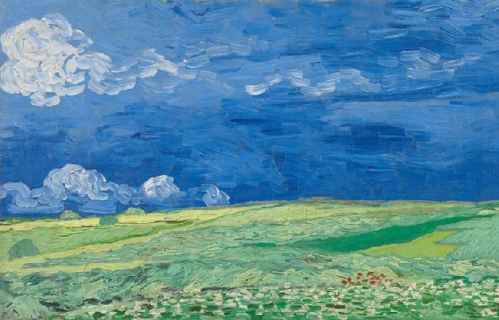
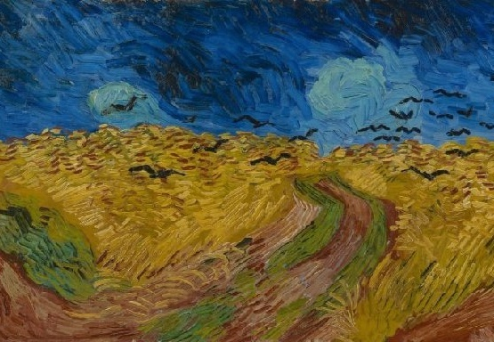
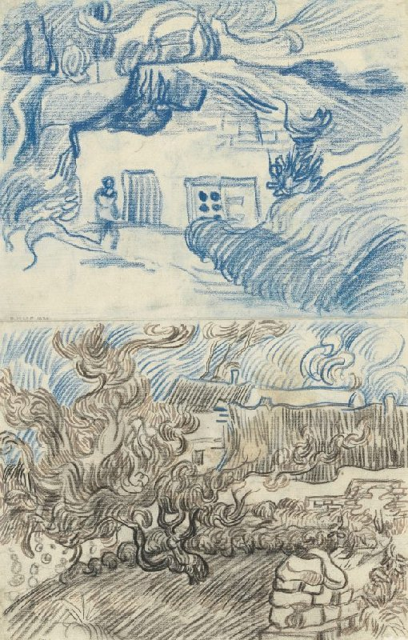
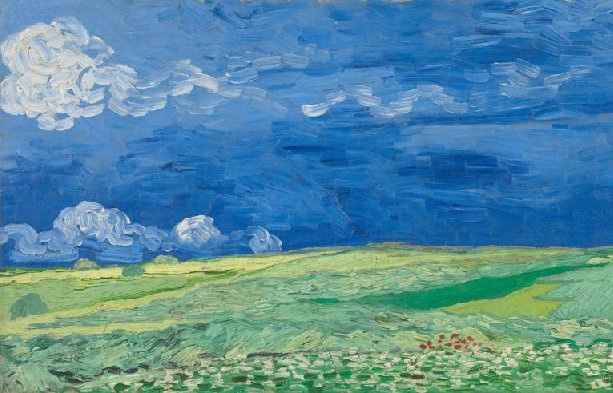
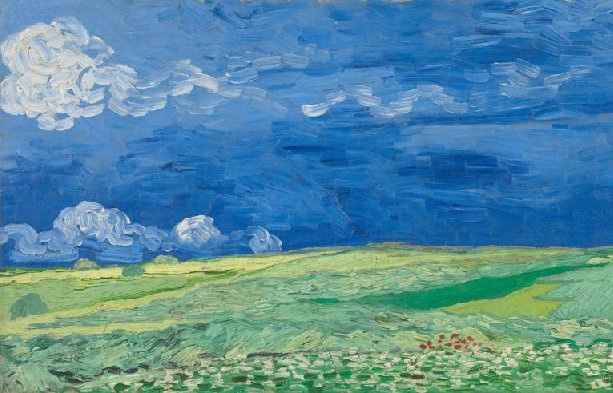
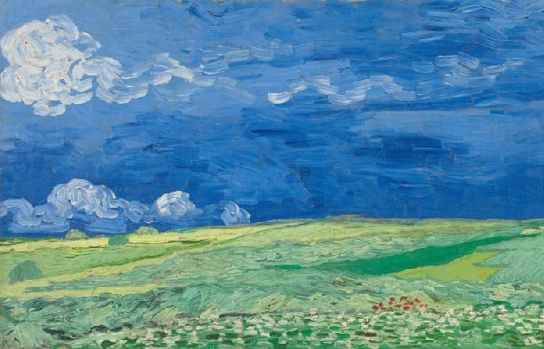
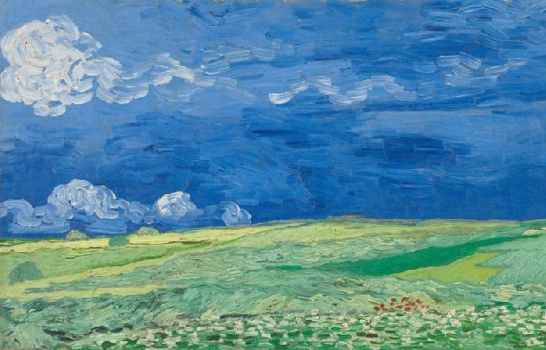

Vincent van Gogh's artistic journey
Main page
Early years
Paris
Arles
Saint-Rémy-de-Provence
Auvers-sur-Ois

Vase of Flowers
, Auvers-sur-Oise, June 1890
Wheatfield under Thunderclouds
, Auvers-sur-Oise, July 1890
 
Wheatfield with Crows
, Auvers-sur-Oise, July 1890
Landscapes with Houses
, Auvers-sur-Oise, June-July 1890
 


